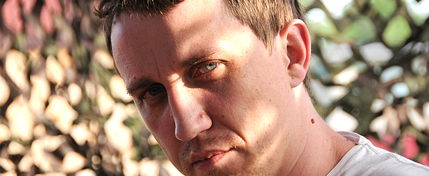

В конце прошлого лета случилось событие, которое изменило мою жизнь изменило мою жизнь. Неожиданно для родных, друзей, и даже для себя, я бросил пить. В том смысле, что бросил пить алкоголь.
Практически с момента совершеннолетия до конца прошлого лета с алкоголем мы были не то, чтобы друзья, — хорошие знакомые. Нет, я не был алкоголиком, меня наутро всегда мутило, когда кто-то собирался похмелиться, но, как и у большинства, уверен, из вас, мой ужин, почти ежедневно, включал в себя пиво, а напитки покрепче были непременным атрибутом встречи с любым количеством друзей.
А в конце прошлого лета как обрубило. До сих пор я не могу найти объяснения этому факту. Буквально за две недели до этого мы выпивали с другом бутылку водки за ежедневными встречами-разговорами, вечера частенько коротались за виски-кола, а потом… всё. Чай, газвода.
Я не буду кокетничать, если скажу, что мир стал другим. Конечно, это пахнет как-то высокопарно, но мир стал другим. Около месяца мне реально дико было ходить по магазинам. Магазины рассчитаны на удовлетворение потребности пьющих граждан. Чтобы добраться до хлеба и молока, мне приходилось проходить отделы с ненужными мне теперь водкой-виски-пивом.

Знаете, бывают такие фотографии из всяких зон вроде Чернобыля. Там где людей нет, а качели ещё качаются… Такие же по духу картинки я видел у себя на кухне. В холодильнике у меня до сих пор стоят 2 бутылки «Мягкова» и одна бутылка какого-то абсента. В шкафу виски, ром, бехеровка, коньяк… Коньяк в оладьи, наверное, добавлять можно.
Друзья, конечно, первое время были удивлены, искали логическое объяснение. К примеру, «пока дочь не родится» — выглядело какое-то время логичным. Поначалу и я переживал… как же теперь встречаться с друзьями.
У меня не открылись ни глаза ни чакры, я не стал фанатичным трезвенником, я не считаю, что алкоголь это плохо. За это время, с конца лета, мы как-то с другом выпили бутылку виски, ещё один раз во «Friday» на ФПК я пил пиво осенью, когда приезжал другой друг из Москвы, пару раз за это лето я по привычке покупал полтораху холодного пива домой. Но, если раньше, за вечер я мог выпить и три литра пива, сейчас, эти пару раз, один налитый стакан так и остаётся недопитым. Что-то щёлкнуло. Не моё.
Я понял, что нет ни одной достойной причины, чтобы употреблять любой из видов алкоголя каждый день. А, потеряв интерес к его употреблению ежедневно, потребность «еженедельная» тоже как-то пропала сама собой.